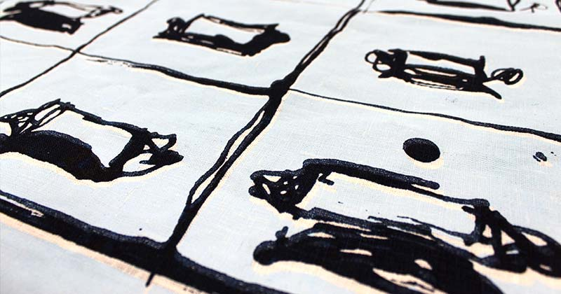

Featured Project
Enigma & the Bombe
An responsive project into the Enigma machine & the Bombe at Bletchley Park
Project Overview
Amber Paris is a textured printed-surface designer. She takes inspiration from a variety of naturalistic and industrial themes to create exciting juxtapositions in print designs. From bold large-scale compositions to small delicate designs, Amber creates fresh, modern prints for the interiors market.
Using a variety of drawing techniques, including ink, stick and watercolour painting, Amber develops her print designs through Photoshop and Illustrator to produce compelling digital textile designs and screen prints. Additional textured features accentuate Amber’s naturally textural drawing and mark-making and allow her to emulate the initial texture inspiration from the preparatory drawing to the final print.
Enigma Research
Amber’s love for the architecture of interior spaces and the potential interior styling they inspire has led her to strive for the very best in interior design. She aims to create pieces which consumers will love and cherish as part of their homes. She carefully selects fabrics for printing that have a slightly textured weave and feel homespun, which are soft to the touch.
Amber’s love for the architecture of interior spaces and the potential interior styling they inspire has led her to strive for the very best in interior design. She aims to create pieces which consumers will love and cherish as part of their homes. She carefully selects fabrics for printing that have a slightly textured weave and feel homespun, which are soft to the touch.
Project Experiments & Development
Amber Paris is a textured printed-surface designer. She takes inspiration from a variety of naturalistic and industrial themes to create exciting juxtapositions in print designs. From bold large-scale compositions to small delicate designs, Amber creates fresh, modern prints for the interiors market. textured printed-surface designer. She takes inspiration from a variety of naturalistic and industrial themes to create exciting juxtapositions in print designs. From bold large-scale compositions to small delicate designs, Amber creates fresh, modern prints for the interiors market.
